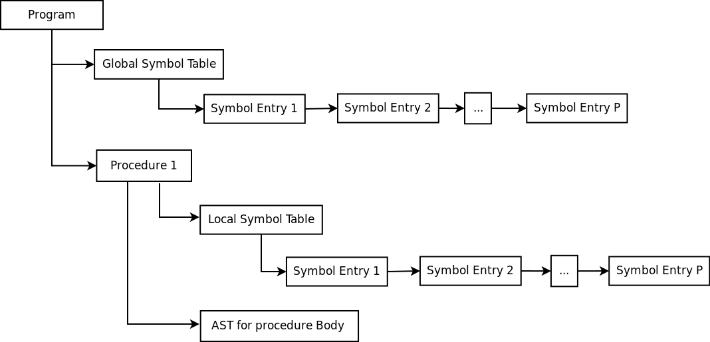
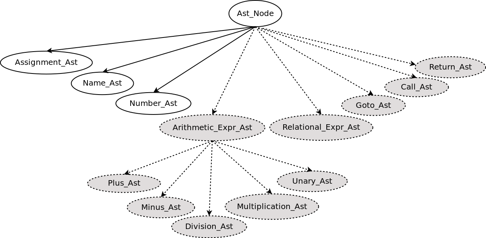
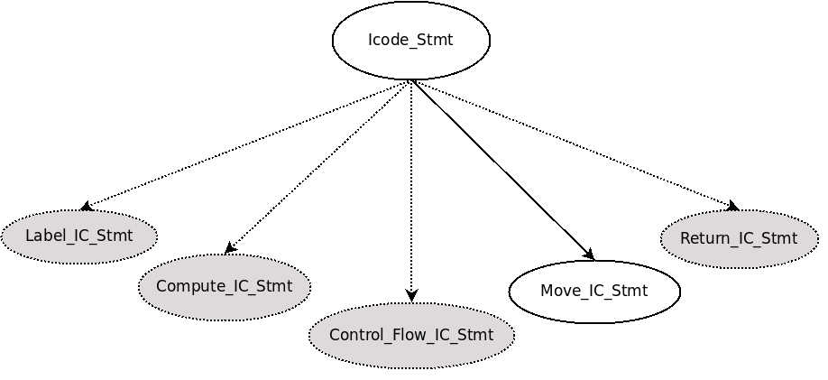
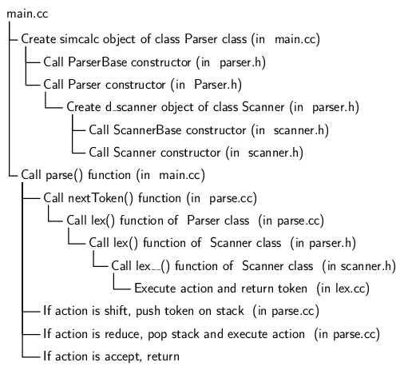
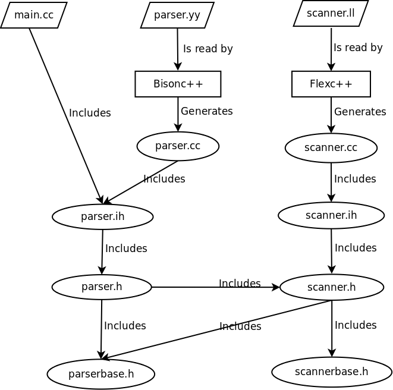

A subset
of sclp code has been made available for level 1 in the form of
some sclp files that need to be completed. The reference
implementations in the form of binaries for subsequent levels
(1, 2, and 3) will be made available for programming assignments
- Level 1. (Sample files). This level
consists of a (possibly empty) list of global declaration
statements followed by the definition of the
main
procedure. No other procedure definition is allowed.
- The lone
main
procedure has the following restrictions:
- It consists of a (possibly
empty) list of local declaration statements followed
by a (possibly empty) list of assignment statements.
- The declarations can
introduce only integer variables (introduced by the
type specifier
int).
No other type or data structure is allowed.
- The list of statements does
not have control flow statements or procedure calls.
- An assignment statement has the
following restrictions:
- The right hand side must be
an integer variable or an integer number.
- All declaration statements
precede any executable statements. Thus there are no
assignments in declarations.
- Level 2. (Sample files). This
level extends level 1 in the following ways:
- Apart from integers, single
precision floating point types (introduced by the type
specifier
float)
are supported.
- Expressions appearing in the
right hand side of an assignment or in comparisons may
contain the following arithmetic operators: +, -,
*, /, and unary minus. Note that the expressions do not
have any side effects.
- Level 3. (Sample
files). This level extends level 2
by supporting intra-procedural control flow statements and
evaluation of conditions in the following ways:
- Conditional expression
e1?e2:e3,
while,
do-while,
for, if, if-else,
and goto
statements are allowed.
switch
statements are not supported.
- The boolean conditions
controlling the control flow consist of the six
comparison operators (<, <=, >, >=, ==, and
!=) and three logical operators (
&&,
||,
and !).
- The values used for comparison
are only integer values.
- The comparison expressions can
also appear on the right hand sides of assignment
statements.
- Level 4. (Sample
files). This level extends Level 4
by supporting function calls (including recursion). In this
level, we have multiple functions. Besides, the functions
may take arguments and may return results. For simplicity,
we assume that function calls do not appear as operands in
expression; this requirement is met by first assigning the
result of a function call to a source variable and then
using the source variable as an operand in the expression at
the required place.
- Level 5. This level extends
Level 4 by supporting data structures such as arrays and
structs.
- parse
and construct ASTs and symbol table (invoke the
scanner when a token is needed, and typecheck during
parsing), and
- evaluate
(store the results in the symbol table) , or
- compile
(assign offsets to variables, generate code in intermediate
form by invoking optional register allocation, emit assembly
instructions during compilation).
The main classes that constitute sclp
- program, procedure, basic block,
abstract syntax trees
- symbol table (persistent as well as
volatile symbol table for scope analysis)
- register and instruction descriptor
- intermediate code
Level
1 Grammar
A
program consists of a declaration_list
which is a list of (optional) global variable_declaration_list, and a procedure_declaration,
followed by a
procedure_definition (in level 1 we have a
single procedure).
program : declaration_list
procedure_definition
;
declaration_list : procedure_declaration
| variable_declaration_list
procedure_declaration
| procedure_declaration
variable_declaration_list
;
|
The
associated action saves the list of global variables and
checks that the names of the global variables and the
procedure name are distinct. If no global variables are
declared in the user program then the global variable list is
NULL. Once
the body of the procedure is processed, the procedure is added
with its procedure name to a map of procedures (in level 1 we
have only one procedure).
Note that there is a difference between a procedure declaration (procedure_declaration in the productions above) and a procedure definition (procedure_definition the productions below).
Our declaration_list
indicates that the optional global variable list and the
procedure prototype can exist in any order. In the procedure_definition
the procedure does not have a return type associated with it
(because it does not return a value) and does not have any
parameters. The procedure body is enclosed in a pair of braces
’{’ and ’}’ and contains an optional_variable_declaration_list
(local variables) followed by a statement_list (in case of level 1).
procedure_declaration : VOID NAME '(' ')' ';'
;
procedure_definition : NAME '(' ')'
'{'
optional_variable_declaration_list
statement_list
'}'
;
|
The
action associated with this rule checks if the list of local
variables have been declared in the user program, and saves
the list of local variables and the basic block.
The variable_declaration_list
is defined recursively as follows:
optional_variable_declaration_list : /* empty */
| variable_declaration_list
;
variable_declaration_list : variable_declaration
| variable_declaration_list
variable_declaration
;
variable_declaration : declaration ';'
;
declaration : INTEGER NAME
;
|
Note that the same non-terminal is used for lists of global as
well as local variables and the position where it occurs
(inside of a procedure or outside it) tells us whether it is
global or local. A declaration of a variable consists of the
type name (only INTEGER
in level 1) and the NAME
of the variable followed by a semicolon (’;’). The action
checks variables for possible redeclaration within the same
scope. Variables thus recognized, are pushed in a symbol
table.
In level 1, we have only assignment statements. An assignment statement can involve only a variable or an
integer number on the right hand side and only a variable on
the left hand side.
statement_list : /* empty */
| statement_list
assignment_statement
;
assignment_statement : variable ASSIGN variable ’;’
| variable ASSIGN constant ’;’
;
variable : NAME
;
constant : INTEGER_NUMBER
;
|
The associated actions check that a variable has been declared
and the types of the left hand side and the right hand side are
same.
Level 1 Data Structures
The data structure of the interpreter
for Level 1 is as shown below. For simplicity, we first show the data structure restricted to a single parameterless procedure (as mandated by Level 1). Its extension for a compiler for higher levels is provided further below.

The program object is an instance of class
Program. It
contains:
Each basic block contains a list of objects
representing AST Statements (Abstract Syntax Tree). They are
represented by an abstract class Ast as shown below. The following
classes are derived from Ast
in Level 1: Name_Ast,
Number_Ast,
Assignment_Ast,
and Return_Ast.

Level 1 Compilation
Compilation requires successful
construction of ASTs for the entire program submitted to sclp and is performed by traversing the ASTs. It involves the following two steps.
The revised data structure (generalized to multiple procedures and procedures with parameters) now looks as shown
below. The light blue boxes indicate additions required for
compilation. The dashed lines indicate shared data structures
that undergo a shallow copy and not a deep copy.
An intermediate code
statement can be one of the following. Icode_Stmt is the base class and
other classes are derived from it. In level 1, we have only move
statements. The gray ovals indicate the statements that you will
have to introduce in subsequent levels.

In order to understand the compilation,
you basically need to understand the following:
- Why multiple intermediate code
statements may be generated for a single AST.
- Why it is useful to also record the
register that contains the final result of the computation
described by a list of intermediate code statements.
- How the register information has
been encoded in the data structures.
- How the statement categories (eg.
register-to-memory, memory-to-register etc.) have been used
for register allocation.
- How offsets are assigned to
variables.
- The activation record structure.
- How the machine instructions have
been encoded in the data structures.
Points 1, 2, 5, and 6 are generic concepts that can
be understood from the first principles. Points 3, 4, and 7 are
specific sclp design. Points 1 and 2 implement the spirit of
the syntax directed definition provided in Figure 6.19 (page
379) of the text book (Compilers: Principles, Techniques, and
Tools by Aho, Lam, Sethi, and Ullman).
While understanding points 3, 4, 6, and 7, please keep the spim
instruction set architecture in mind.
The design and implementation of sclp
has some limitations which we expect to overcome in subsequent
versions. We welcome more additions to the following list.
- The use of a map to store symbol table details is fine for
global and local variables where the order does not matter.
However, for formal parameters, the order matters (because of
positional correspondence between actual and formal
parameters). I have been able to circumvent this problem by
explicitly storing the sequence number but perhaps a better
design is possible.
- We would like to introduce an optimizer generator which
works with sclp to allow the users to specify analyses and
transformations declaratively and automatically construct
optimizers that work within cfglp.
Source code for Level 1 will be provided at a later stage.
Reference Implementations
|
Executables
of reference implementation for different levels will be provided from time to time.
We would appreciate hearing about bugs if you come across any.
Using Flexc++ and Bisonc++
|
We use
flexc++ and bisonc++ to generate C++ code for the scanner and
parser. They provide a cleaner interface compared to flex and
bison which generates C code by default but can be made to
generate C++ code. For a detailed documentation, please visit
the oringal flexc++
web page and the bisonc++ web page.
They contain extensive documentation. Here we provide some
details to help your understanding.
We introduce flexc++ and bisonc++ in three steps keeping the
examples as simple as possible:
We explain the interaction between the
scanner and the parser in details in the third step.
Using Flexc++ to Create a
Scanner to Recognize Numbers
We provide a simple example of using
flexc++ to creare a standalone scanner. Since the generated
scanner is called from main.cc rather than from within a
parser, the class Scanner generated by flexc++ is sufficient
and there is no need to manually change it unlike in the next
two cases.
We reproduce the scanner script below. It defines tokens using
regular expressions defined over character classes and prints
the lexemes found along with the token that they match.
digit [0-9]
operator [-+*/]
%%
{digit}+ { std::cout << "Found a number whose lexeme is '" << matched() << "'\n"; }
{operator} { std::cout << "Found an operator whose lexeme is '" << matched()[0] << "'\n"; }
. { std::cout << "Found an unrecoganized character '" << matched()[0] << "'\n";
|
Please download the
complete tarball or see the files.
Please see the README file and Makefile for more details.
Using Flexc++ and Bisonc++
together to Recognize Expressions
We provide a simple
example of using flexc++ and bisconc++ to creare a parser and
scanner that recognize valid expressions. Now the scanner
returns a token to the parser (eg. return Parser::NUM;
).
Scanner
script
|
Parser scripts
|
exp.ll
|
%%
[0-9]+ {
return Parser::NUM;
}
[-+*/] {
return matched()[0];
}
\n {
return matched()[0];
}
[ \t] { }
%%
|
|
|
exp1.yy
|
%start E
%token NUM
%%
E : NUM { cout << "found an expression consisting of a number\n"; }
;
|
|
exp2.yy
|
%start E
%token NUM
%%
E : NUM { cout << "found an expression consisting of a number\n"; }
| E '+' E { cout << "found a plus expression\n"; }
;
|
|
exp3.yy
|
%start E
%token NUM
%left '+'
%%
E : NUM { cout << "found an expression consisting of a number\n"; }
| E '+' E { cout << "found a plus expression\n"; }
;
|
|
exp4.yy
|
%start E
%token NUM
%left '+'
%left '*'
%%
E : NUM { cout << "found an expression consisting of a number\n"; }
| E '+' E { cout << "found a plus expression\n"; }
| E '*' E { cout << "found a mult expression\n"; }
;
|
|
exp5.yy
|
%start E
%token NUM
%left '+' '-'
%left '*' '/'
%%
E : NUM { cout << "found an expression consisting of a number\n"; }
| E '+' E { cout << "found a plus expression\n"; }
| E '*' E { cout << "found a mult expression\n"; }
| E '-' E { cout << "found a sub expression\n"; }
| E '/' E { cout << "found a div expression\n"; }
;
|
|
|
Please download the
complete tarball or see the files.
Please see the README file and Makefile for more details.
A Simple Expressions
Calculator Example
We use a simple calculator program to
explain the interaction between a scanner and a parser
generated using flexc++ and bisonc++. The calculator computes
the result of a single expression consisting of numbers and
operators +
and *.
The the scanner and parser specificatons for our calculator,
along with the associated actions to perform the computation
are:
Scanner
script
|
Parser
script
|
%%
[0-9]+ {
ParserBase::STYPE__ *val = getSval();
*val = atoi(matched().c_str());
return Parser::NUM;
}
[+*] { return matched()[0]; }
\n { return matched()[0]; }
[ \t] { }
. {
string error_message;
error_message = "Illegal character `" + matched();
error_message += "' on line " + lineNr();
cerr << error_message;
exit(1);
}
%%
|
|
%token NUM
%start Start
%left '+'
%left '*'
%%
Start : Expr '\n' { cout << "\t= " << $1 << "\n"; }
;
Expr : Expr '+' Expr { $$ = $1 + $3; }
| Expr '*' Expr { $$ = $1 + $3; }
| NUM { $$ = $1; }
;
|
|
Please download
the complete tarball or see
the files.
In this grammar we have four terminals (or tokens): NUM, +, *, and \n and two
non-terminals Start
and Expr.
The operators +
and * have
been declared to be left associative and * is declared to
have a higher precedence than + (because its associativity
specification appears lower). The action $$ = $1 + $3
adds up the values associated with the two occurrences of Expr on the right
hand side and assigns it to the value of the Expr appearing on
the left hand side. The action { $$ = $1; }
assigns the value of NUM
to Expr.Passing different values derived from the lexemes from a scanner to a parser
The calculator example illustrates how an integer value can be passed from a scanner to a parser. In most cases, we need to pass more than one type of values. For this we declare a union of values in the parser, qualify the grammar symbols with the field names and set appropriate values using the field names in the scanner script.
The following example illustrates this. Our parser recognizes a list (non-terminal List) consisting of names (terminal NAME) and numbers (terminal NUM). In our scheme of things, the lexemes matching the token NUM represent integer values whereas the lexemes matching the token NAME represent string values. We specify this in the parser script as a C++ union of integer and a pointer to a string through the directive %union. This union is used to declare values of the type STYPE__ internally by the parser. We have named the fields of the union as integer_value and string_value. The specifications of the terminals are qualified with appropriate field name (integer_value for token NUM and string_value for token NAME) in the parser script.
The values of the tokens are set by the scanner script using function matched which returns the actual lexeme matching the regular expression corresponding to the token identified. The values are set in two steps: First, we acquire a pointer to STYPE__ using the getSval function in the ScannerBase class. Then we store the values using the appropriate field of the union (integer_value for token NUM and string_value for token NAME). Finally the tokens are returned to the parser.
Within the parser script, the values are directly available and can be accessed using the $i variable for the ith grammar symbol on the RHS of a rule.
Scanner
script
|
Parser
script
|
%%
[[:digit:]]+ {
ParserBase::STYPE__ *val = getSval();
val->integer_value = atoi(matched().c_str());
return Parser::NUM;
}
[[:alpha:]_][[:alpha:][:digit:]_]* {
ParserBase::STYPE__ *val = getSval();
val->string_value = new std::string(matched());
return Parser::NAME;
}
|
|
%union
{
int integer_value;
std::string * string_value;
};
%token <integer_value> NUM
%token <string_value> NAME
%%
List : List NUM { cout << "Parser found a number " << $2 << endl; }
| List NAME { cout << "Parser found a name " << *$2 << endl; }
| NUM { cout << "Parser found a number " << $1 << endl; }
| NAME { cout << "Parser found a name " << *$1 << endl; }
;
|
|
This simple parser implementation can be downloaded for experimentation.
The internal details of the interaction between a scanner and a parser are as follows. The scanner is defined by an object of class Scanner which
inherits from a base class ScannerBase. Similarly, the parser is
defined by an object of class Parser which inherits from a base
class ParserBase.
We create an object called simcalc as an
instance of class Parser
and then call its parse()
function. The constructor of Parser creates an object called d_scanner as an
instance of the Scanner
class. The parse()
function receives tokens from the lex() function and
takes the parsing decisions. This has been illustrated below.

Since
the the tokens are recognized by the scanner, and their
values have to be passed by the scanner to the parser. In
this case, after the scanner identifies a certain sequence
of digits as a lexeme corresponding to the token NUM, it should
also compute the value of the number from the lexeme and
make it available to the parser. We explain this interaction
below by first showing the default Scanner class
generated by flexc++ and the default Parser class
generated by bisonc++. Then we show how the classes are
modified.
Automatically generated Scanner and Parser
classes are as shown below
|
class Scanner: public ScannerBase
{
public:
explicit Scanner(std::istream &in = std::cin,
std::ostream &out = std::cout);
Scanner(std::string const &infile,
std::string const &outfile);
// $insert lexFunctionDecl
int lex();
private:
int lex__();
int executeAction__(size_t ruleNr);
void print();
void preCode();
};
|
class Parser: public ParserBase
{
// $insert scannerobject
Scanner d_scanner;
public:
int parse();
private:
void error(char const *msg);
int lex();
void print();
// support functions for parse():
void executeAction(int ruleNr);
void errorRecovery();
int lookup(bool recovery);
void nextToken();
};
|
Manually updated classes (see the
lines in red) to enable transfer of values
from the Scanner to the Parser
(Our Makefile performs adds these lines automatically using sed commands Please see the explanation in the README
file and the Makefile.)
|
class Scanner: public ScannerBase
{
public:
explicit Scanner(std::istream &in = std::cin,
std::ostream &out = std::cout);
Scanner(std::string const &infile,
std::string const &outfile);
// $insert lexFunctionDecl
int lex();
private:
ParserBase::STYPE__ * dval;
int lex__();
int executeAction__(size_t ruleNr);
void print();
void preCode();
public:
void setSval(ParserBase::STYPE__ * val);
ParserBase::STYPE__ * getSval();
};
|
class Parser: public ParserBase
{
// $insert scannerobject
Scanner d_scanner;
public:
Parser()
{
d_scanner.setSval(&d_val__);
}
int parse();
private:
void error(char const *msg);
int lex();
void print();
// support functions for parse():
void executeAction(int ruleNr);
void errorRecovery();
int lookup(bool recovery);
void nextToken();
};
|
The class Parser
has a protected member d_val__ which it inherits from
the base class ParserBase.
We make the address of this variable available to
the Scanner
class by adding new constructor for the Parser class
which calls the function d_scanner.setSval (d_scanner is
the scanner object used by the parser object). This is a
function that we have added in the Scanner class.
This function store the pointer in a private variable dval. Whenever
the script in scanner.ll
has to make the value available to the parser, it gets the
pointer using the function getSval and
stores the value in the address which happens to be the
address of the variable d_val__ in an object of the Parser class.
The file inclusions are a little tricky and have been
illustrated below. The files at the top are the files that
we write. The parser.yy
and scanner.ll
are the scripts that are read by bisonc++ and flexc++ which
then generate the parser.cc
and scanner.cc
files and the associated header files.

Installing Flexc++ and Bisonc++
On Ubuntu 14.04 and 16.04, a standard installation from the repositories using apt or synaptic work well.
For Ubuntu 12.04, the steps for installing Flexc++ and Bisonc++ on a 64 bit intel processor based machine have
been given below. For a 32 bit intel processor based
machine, please replace amd64 by i386 in the installation of libbobcat and
libbobcat-dev.
We need to install the
following packages. Note that the specific version numbers
(or higher versions) are important. Wherever possible, we
suggest using the apt-get
command (synaptic package manger would do just as well)
minimising the need of installation from .deb files or
source files.
g++
version 4:4.6.3-1ubuntu5.
- Use the command
sudo
apt-get install g++.
bisonc++
version 2.09.03-1.
- Use the command
sudo
apt-get install bisonc++.
icmake
version 7.16.01-1ubuntu1
- Use the command
sudo
apt-get install icmake.
libbobcat
version 3_3.01.00-1
- Visit the site https://launchpad.net/ubuntu/quantal/amd64/libbobcat3/3.01.00-1.
- Check for all dependencies and their versions listed
on the site. You may want to use the synaptic package
manager to find out whether the dependencies have been
installed on your system. Install all missing
dependencies.
- Download the
libbobcat3_3.01.00-1_amd64.deb
file and use the command sudo
dpkg -i libbobcat3_3.01.00-1_amd64.deb.
libbobcat-dev
version 3.01.00-1. These are the development libraries
(note the suffix -dev).
- Visit the site https://launchpad.net/ubuntu/raring/amd64/libbobcat-dev/3.01.00-1.
- Check for all dependencies and their versions listed
on the site. You may want to use the synaptic package
manager to find out whether the dependencies have been
installed on your system. Install all missing
dependencies.
- Download the
libbobcat-dev_3.01.00-1_amd64.deb
file and use the command sudo
dpkg -i libbobcat-dev_3.01.00-1_amd64.deb.
flexc++
version 0.98.00.
- Check for all dependencies and their versions listed
on the site. You may want to use the synaptic package
manager to find out whether the dependencies have been
installed on your system. Install all missing
dependencies.
- Download the source code archive file
flexc++_0.98.00.orig.tar.gz.
- Untar the source code using the command
tar zxvf
flexc++_0.98.00.orig.tar.gz.
- Change the directory using
cd flexc++-0.98.00.
- Follow the steps given in the file
INSTALL.